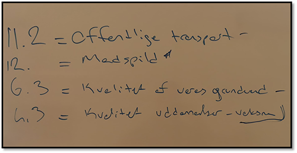
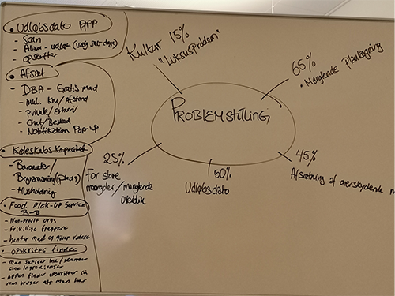
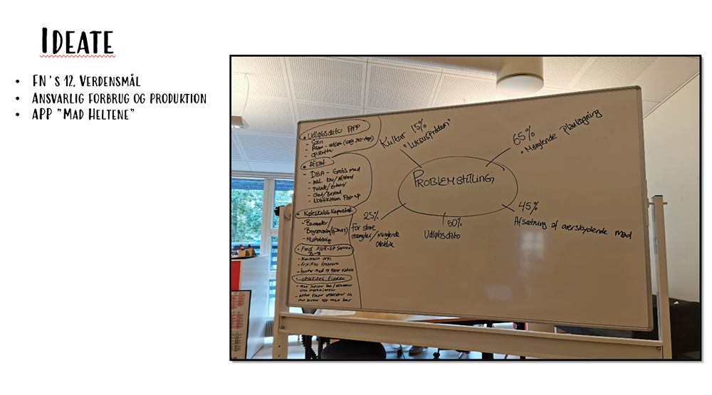
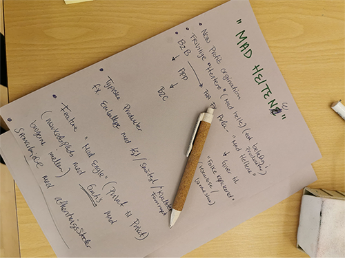
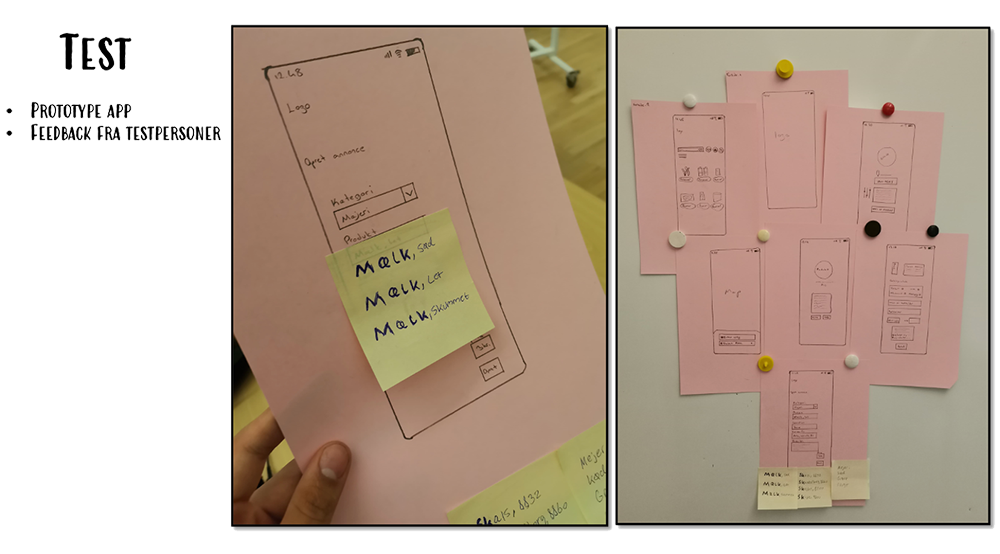
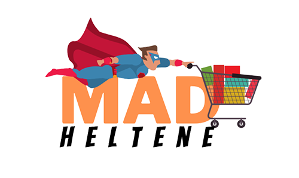

FN-VERDENSMÅL
FN-VERDENSMÅL var et design thinking projekt, hvor vi skulle udarbejde en App ud fra et af FN´s 17 verdensmål.
EMPATHISE FASEN er den første fase i Design Thinking, så startede selvfølgelig med Empathise fasen
Vi fik vide at Danmark skulle være vores udgangspunktet for det ” verdensmål ”.
Vi begyndte at udvælge de verdensmål, som vi syntes, der var ikke nødvendigt i vores samfund og også i forhold til, hvor lang tid vi havde til at gennemføre projektet osv.
Vi havde udvælge 4 verdensmål, ude fra hvad der var relevant for Danmark, efter at have gennemgået de 17 forskellige verdensmål.

To verdensmål blev udvalgt og efter en del samtaler og diskussioner, kom vi frem til at vælge kun et verdensmål, udefra hvad der var relevant for Danmark og udviklingspotentialet.
DEFINE FASEN
Her, skulle vi definere problemstillingen, vi har udarbejdet nogle punkter på en tavle og blev enig om, at vi skulle indsamle data fra det fastsatte målgruppen, for at kunne identificere problemstillingen.
Vi ville arbejde med Kvalitativ metode i form af spørgeskema, netop for at få flere varierende besvarelser, og dermed identificere problemstillingen
DATA INDSAMLING - KVALITATIV METODE
Følgende åbne spørgsmål er benyttet til at belyse målgruppens forbrugsvaner:
- Hvor ofte køber du tøj?
- Smider du brugt tøj ud?
- Giver du tøj til genbrug?
- Hvor ofte handler du ind?
- Hvad er det gennemsnitlige beløb du handler ind for pr. gang?
- Hvor stor en procentdel af maden du køber, vil du tro bliver smidt ud hver måned
RESULTATER
Generelt så kan det ses at ligheden for dem som ikke har problemer med madspild, at de har en god madplan og de mener at grunden til folk har problemer med madspild er fordi de ikke er opmærksomme nok på deres købevaner.
Så kan det ses at det var familier af mindst 3 og de havde madspild på 5%-10%, mens en familie havde 20% madspild.
En udfordring de familier har er at de køber for meget mad, og ikke har en sat madplan. Det meste af deres mad der bliver smidt ud er grønt og frugt, brød, pasta og mejeri varer. Og 80% af det er fordi det er blevet dårligt. Mens 20% er rester fordi de har for meget mad. De handler alle sammen en gang om ugen måske to, men vil helst holde på en.
De sagde også alle sammen at de gerne ville gøre noget bedre med deres ekstra mad, som at give det til folk i nød men de føler ikke der bliver opfodret til det nok og der er ingen muligheder i nærheden, som de har hørt om hvor man kan give sin mad væk til andre.
Så de ender bare med at gøre det nemmeste som først popper op i deres tanker som er at smide det ud eller give det til deres husdyr.
IDEATE & PROTOTYPE & IMPLEMENTERING
I Ideate fasen, har vi arbejdet med divergent tænkning til at udforske udfordringerne og udvikle ideer til løsninger.
Vi brainstormede og skrev alle potentielle og spontane ideer op.
Vi valgte at fokusere på madspild og dermed, endte vi med at arbejde med ideen ” Madheltene ”.
Vi har fået lavet nogle skitser af papir form og fik testet ´produktet´ med testpersonerne. Med dette feedback vi har fået, skabte vi endelige produkt.


FUNKTIONALITETEN
LOGO-PROCESSEN

